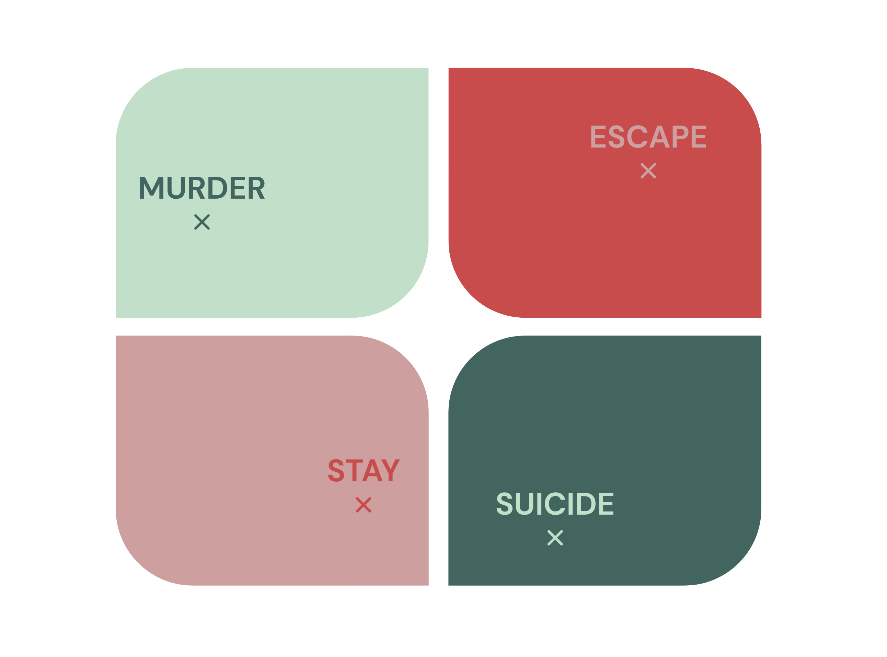

Overview
SOMEONE ELSE’S
BUSINESS
UE5 Interactive Cinema Prototype / GOBELINS End-of-Year Project

SOMEONE ELSE’S BUSINESS is an Unreal Engine 5 interactive cinema prototype that reimagines an original short film, written and directed by Suji Park, as a voice-driven new media narrative experience.
Built as a playable vertical slice for a psychological thriller, the project combines spatial investigation, cinematic presentation, AI-assisted dialogue, STT/TTS voice interaction and real-time emotional-state-driven camera, lighting, cinematic staging and ending direction into one continuous realtime experience.
PROJECT PRESENTATION
Project Scope
Project Scope
Scope
Developed independently from the original film concept to the final playable prototype, translating the writing and directing work into an interactive realtime format.
Project Highlights
- Original short film reimagined as an interactive new media narrative
- Playable vertical slice of a voice-driven psychological thriller
- Spatial investigation through inspectable objects and in-world memory playback
- AI-assisted character dialogue with STT/TTS interaction
- Camera, lighting, cinematic staging and ending direction evolving in real time with the character’s emotional state
Unreal Engine 5, Blueprint, Sequencer, VaRest, OpenAI API, STT/TTS, Premiere Pro and Photoshop
Visual Presentation
Visual Presentation
Selected stills from the prototype’s visual identity, environment, UI and interactive flow.


Process Breakdown
Process Breakdown
A breakdown of SOMEONE ELSE’S BUSINESS, showing how filmed footage, Unreal environments, spatial investigation, voice interaction, AI-assisted dialogue and route-based endings were connected into one cinematic flow.
Narrative Flow
Actual chronology and player chronology are separated, allowing the player to reconstruct a hidden week of investigation before entering the dialogue scene.


Cinematic Presentation
The opening combines filmed footage and in-engine Sequencer cinematics before transitioning into playable investigation. Letterbox framing, subtitles, fade timing and title cards keep the experience close to cinema while moving the player into control.

Interaction Design
The Inspect phase uses a simple loop: look around, find an item, click, read or watch, then update understanding. Core items drive progression, while ambient items deepen atmosphere without blocking the main flow.
Memory footage is presented inside the world through the old TV screen rather than as a flat UI window, keeping discovery tied to physical movement and cinematic viewing.

AI Dialogue & Runtime Response
The dialogue system supports voice or text input through a structured interaction loop. Each player response is sent to the LLM manager, which returns a structured runtime response containing emotional state, narrative direction and cinematic tone.
During the dialogue scene, the character’s emotional state updates in real time, influencing camera, lighting, cinematic staging and ending direction as the conversation unfolds. Four emotional values — rage, trust, agency and shame — apply pressure toward different ending routes.


Voice Input & TTS Playback
Voice interaction is supported through an STT/TTS pipeline that connects player input to in-scene character playback. Spoken input can be transcribed and processed alongside text input, keeping the interaction flexible while preserving the same narrative logic.
Character replies are then converted into voice playback through ElevenLabs TTS and returned to the scene with subtitles and synced audio, reinforcing the cinematic presence of the conversation.